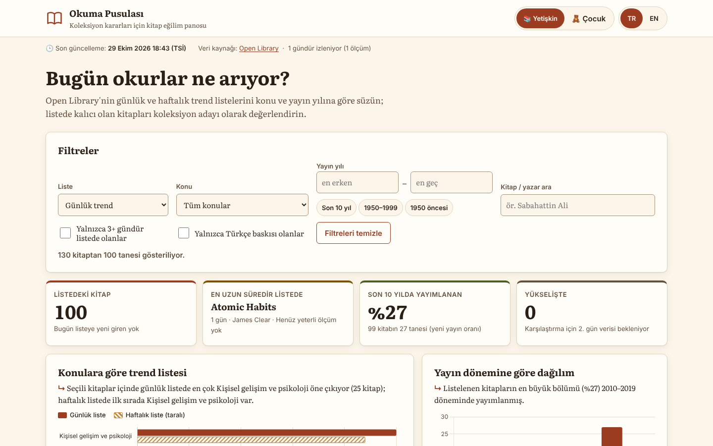
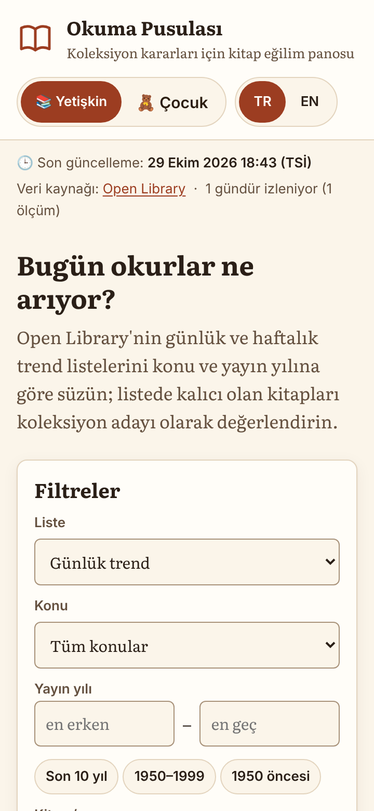
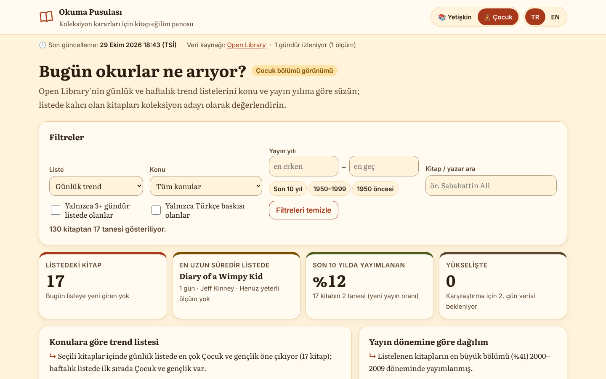
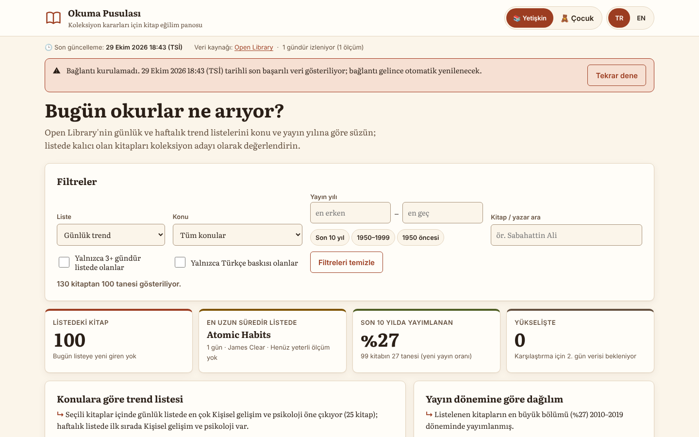

Demo (75 sn)
Problem
İlçe kütüphanelerinde koleksiyon bütçesi küçüktür ve alım kararları çoğunlukla yayınevi kataloglarına, satış listelerine ya da kütüphanecinin sezgisine dayanır. Bu kaynaklar ya pazarlama odaklıdır ya da geçmişe bakar. Kütüphanecinin elinde, okurların şu anda hangi kitaplara yöneldiğini konu ve yayın dönemi bazında gösteren, her gün kendiliğinden yenilenen bir görünüm yoktur.
Asıl soru şuydu: “Bu hafta öne çıkan kitaplardan hangisi geçici bir ilgi, hangisi kalıcı bir eğilim?” Tek günlük bir liste bunu yanıtlayamaz; zamana yayılmış veri gerekir.
Kullanıcı
Kütüphaneci (yetişkin koleksiyonu)
- Ayda bir alım listesi hazırlar, sınırlı bütçeyle.
- Veri aracı kullanmaya alışkın değil; tabloya ve sade cümlelere güvenir.
- Sorusu: “Hangi konu yükselişte, listede kalıcı olan kitap hangisi?”
Kütüphaneci (çocuk bölümü)
- Çocuk ve gençlik koleksiyonundan sorumludur; okul dönemine göre alım yapar.
- Ekranı bazen çocuklarla birlikte inceler: büyük yazı ve sade görünüm önemlidir.
- Sorusu: “Çocuklara yönelik hangi yeni kitaplar ilgi görüyor?”
Not: Müşteri kurgusaldır; ürün gerçek bir kurumla iş birliği içinde geliştirilmemiştir.
Veri hattı mimarisi
Open Library geçmiş trend verisi sunmaz; yalnızca “şu anki” listeyi verir. Bu yüzden kendi zaman serimi biriktirmem gerekti. GitHub Actions 6 saatte bir çalışıp listeyi çekiyor, zaman damgalı bir snapshot olarak depoya yazıyor ve tüm snapshot'lardan arayüzün okuduğu tek bir özet dosya üretiyor.
Önemli kararlar
- Tarayıcıdan doğrudan API yerine zamanlanmış çekim: Her kullanıcı Open Library'ye istek atmaz; günde 4 çekim, eser ayrıntıları önbellekte. Kaynağın hız sınırına saygı ve hızlı açılış.
- “Listede kalınan gün” = kitabın günlük trend listesinde görüldüğü farklı takvim günü sayısı (İstanbul saatine göre). Geçici ilgi ile kalıcı eğilimi ayıran ana ölçüt bu.
- Konu eşlemesi: Open Library'nin binlerce serbest konu etiketini 12 kütüphaneci dostu gruba indirdim; önce konu ucunun üye listesine, sonra anahtar kelimelere bakıyorum.
- API anahtarı yok: Kaynak anahtar istemiyor; istemci kodunda gizli bilgi bulunmuyor.
Ekranlar




Tasarım kararları
Portfolyo tasarım sistemi ile kart kısıtı
Portfolyomun boşluk ölçeğini, köşe yarıçapını, odak halkasını ve tip ölçeğini aynen kullandım. Renk ve gövde yazısında ise kart kısıtı önceliklidir: kütüphane kimliği için kâğıt, mürekkep ve kiremit tonlarından oluşan sıcak bir palet ve okunaklı bir serif (Literata) seçtim. Literata ekran okuması için tasarlanmış bir serif; Türkçe karakterleri eksiksiz destekliyor ve yerelde barındırılıyor. Odak halkasını bilerek soğuk mavi bıraktım: sıcak paletin içinde kaybolmasın.
İki görünüm modu
Çocuk modu yalnızca bir renk değişimi değil: gövde yazısı 17 px'ten 19 px'e çıkıyor, satır aralığı ve dokunma alanları büyüyor, köşeler yuvarlaklaşıyor ve veri yalnızca çocuk/gençlik etiketli kitaplara süzülüyor. Her iki moddaki tüm metin/zemin çiftleri 4.5:1'in üzerinde (en düşük 5.31:1).
Erişilebilirlik
- Her grafiğin üstünde veriden üretilen tek cümlelik özet ve altında “Veriyi tablo olarak gör”.
- Renk tek başına anlam taşımıyor: haftalık seri taralı desenle, durumlar ▲ ▼ ★ ikonları ve metinle gösteriliyor.
- Sparkline'ların her biri ekran okuyucuya “Günlük sıra 12 → 5 (en iyi 3)…” biçiminde okunuyor.
- Sıralanabilir başlıklar gerçek düğmeler ve
aria-sorttaşıyor; dar ekranda ayrıca bir sıralama seçicisi var.
Kullanıcı testi
Sonuç
- Pano insan müdahalesi olmadan günde 4 kez güncelleniyor; her çalışmada bir snapshot birikiyor.
- Kütüphaneci tek ekranda konu, dönem ve kalıcılık bilgisini birlikte görüyor; “3+ gündür listede” filtresi geçici ilgiyi eliyor.
- API kapalıyken ve çevrimdışıyken pano son başarılı veriyle açılıyor, durumu açıkça söylüyor; uygulama olarak yüklenebiliyor (PWA).
- Lighthouse (mobil): ölçüm sonrası eklenecek.
Bir haftam daha olsaydı
- Yerel katalog eşleşmesi: Kütüphanenin kendi kataloğu (ör. MARC dışa aktarımı) ile karşılaştırıp “trendde ama rafımızda yok” listesini çıkarırdım; asıl karar bu.
- Türkçe yayın sinyali: Open Library ağırlıklı olarak İngilizce okurları yansıtıyor; ISBN üzerinden Türkçe baskısı olan kitapları işaretlerdim.
- Uzun dönem eğilimi: Birkaç haftalık snapshot biriktiğinde konu paylarının zaman serisini ana grafiğe eklerdim.
- Alım listesi dışa aktarımı: Seçilen kitapları CSV olarak indirip satın alma birimine göndermek.